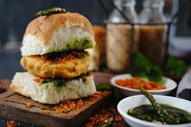

VADAPAV

description
Vada Pav is a popular Indian street food originating from Mumbai, consisting of a spicy potato fritter (vada) sandwiched between a soft bread roll (pav).
It is typically garnished with chutneys and green chili, offering a flavorful blend of spicy, tangy, and savory tastes.
Known as the "Indian burger," it is a beloved snack for its simplicity and deliciousness.
Ingredients
- potatoes
- green chilis
- ginger garlic paste
- Turmeric Powder
- Mustard Seeds
- Curry Leaves
- Salt
- Oil
- Gram Flour (Besan)
- Red Chili Powder
- Baking Soda
- Water
- Pav (Bread Rolls)
- Green Chutney
- Sweet Tamarind Chutney
- Dry Garlic Chutney
- Butter
Steps
- Heat 1 tablespoon of oil in a pan.
- Add 1/2 teaspoon mustard seeds, 8-10 curry leaves, a pinch of asafoetida (hing), and 2-3 chopped green chilies. Sauté for a minute.
- Add 1 teaspoon ginger-garlic paste and 1/2 teaspoon turmeric powder. Sauté until fragrant.
- Add 3-4 boiled and mashed potatoes and salt to taste. Mix well.
- Let the mixture cool, then shape it into small balls.
- In a bowl, mix 1 cup gram flour (besan), 1/4 teaspoon turmeric powder, 1/2 teaspoon red chili powder, a pinch of baking soda, and salt to taste.
- Gradually add water to make a smooth, thick batter.
- Heat oil in a deep pan for frying
- Dip each potato ball into the batter, coating it evenly, and deep-fry until golden brown. Drain on paper towels.
- Slice the pav (bread rolls) and lightly toast them with butter on a griddle.
- Spread green chutney and sweet tamarind chutney on the inner sides of the pav.
- Place a fried vada between the pav halves.
- Serve: Optionally, serve with fried green chilies and extra chutney.